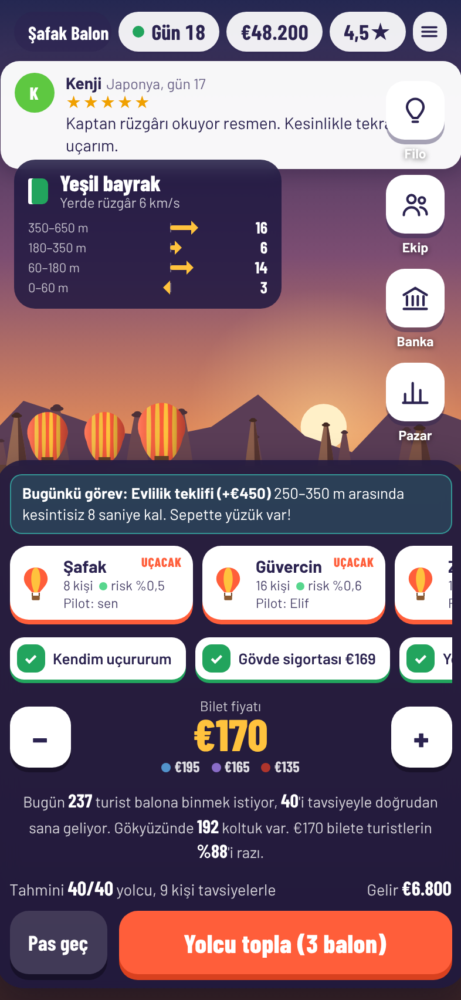
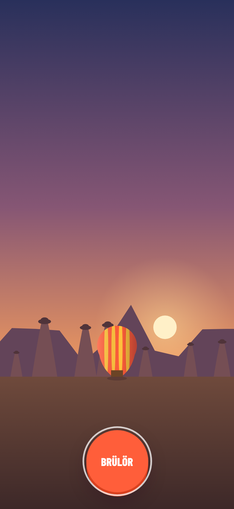
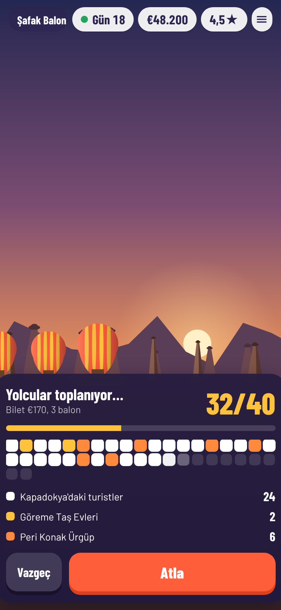
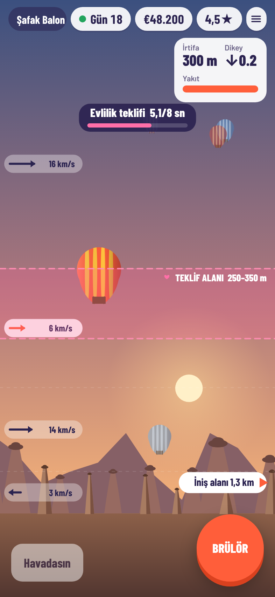
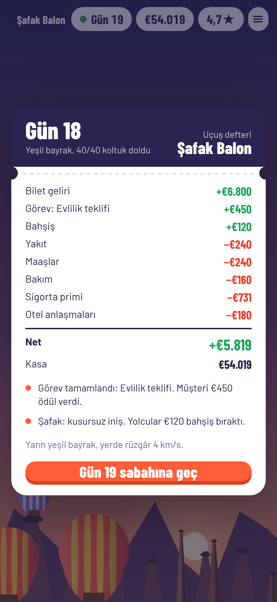
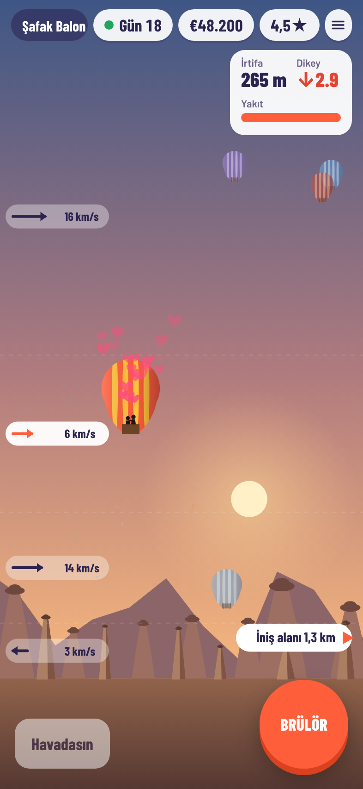
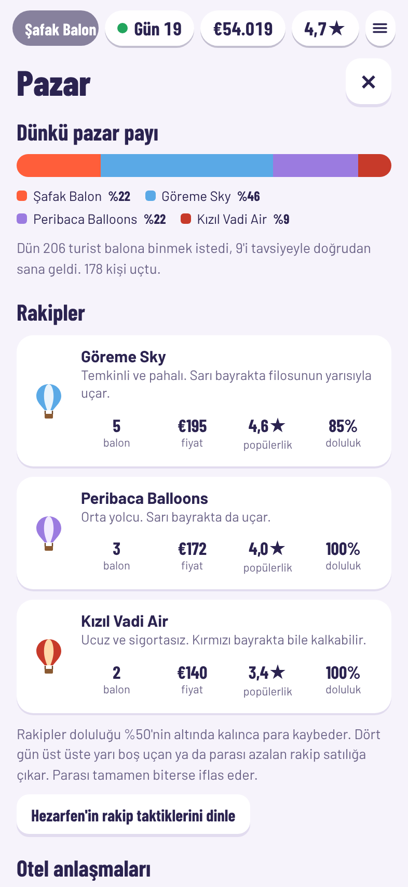
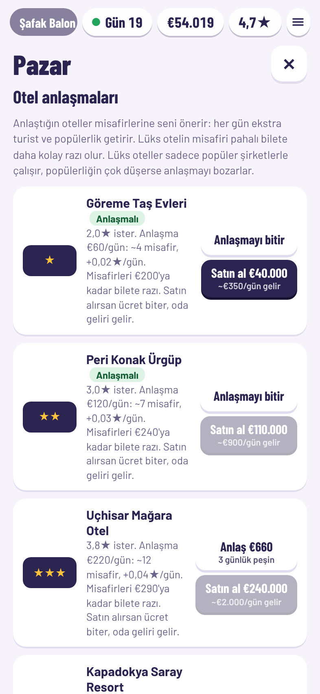
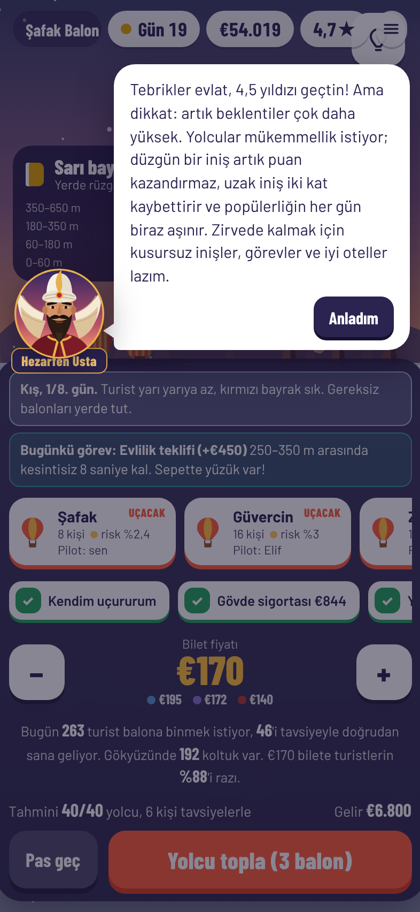

Gün doğumunda Kapadokya. Elinde tek bir balon, kafanda bir imparatorluk. Rüzgârı oku, yolcularını uçur, rakiplerini gökyüzünden sil.


Prototipi telefonundan dene.
Kameranla QR kodu okut ya da son sayfadaki bağlantıyı aç.
iPhone için geliştiriliyor.
Her oyun günü bir Kapadokya sabahı. Kararını ver, yolcunu topla, havalan ve günün hesabını gör. Sonra yeni bir sabah.
Bayrak rengine ve rüzgâr katmanlarına bak. Bilet fiyatını ayarla, hangi balonların kalkacağını ve sigortayı seç.

Koltuklar renk renk doluyor: pazardaki turistler, anlaştığın oteller, rehberler, influencerlar.

Brülöre basılı tut, ısın ve yüksel. Seni iniş alanına götüren rüzgâr katmanını bul, yumuşacık in.

Bilet, bahşiş, maaşlar, sigorta, kazalar. Günün sonunda kasan ne durumda, rakipler ne yaptı?

Evlilik teklifi görevi: pembe alanda kesintisiz 8 saniye.
Gerçek balon pilotları gibi: her yükseklikte rüzgâr farklı yöne eser. Doğru katmanı yakalayan, iniş alanına ulaşır. Yanlış katmanda kalan, peribacalarının arasında kaybolur.
Balonu 250–350 metrede tut. Sepette diz çöken bir adam, sarılan bir çift, kalpler ve alkış.
Vadinin üstünden 150 metrenin altında, kayalara değecek kadar alçaktan geç.
Fotoğrafçın için 550 metrenin üstüne çık, bütün Kapadokya ayaklarının altında.
Rüzgârlı bir sabah yer ekibinin karavanının 40 metre yakınına kon.
Küçük bir balonla başlarsın. Sonra filo, pilotlar, oteller ve gökyüzünün en büyük balonu gelir. Ama her büyüme bir risktir.

Pazar payı ve rakiplerin.

Otellerle anlaş ya da satın al.

Hezarfen Usta yol gösterir.
8, 16 ve 24 kişilik sepetler. Çaylak pilotlar uçtukça tecrübe kazanır. Pilot okulun mezunları ömür boyu ucuza çalışır.
Turistler seni yıldızına göre seçer. Kusursuz iniş, otel, influencer yükseltir. Kaza ve reklam düşürür.
Senin renklerinde 32 kişilik dev imza balon. Herkesin fotoğrafına girer.
Kapadokya'nın sabahlarını paylaştığın şirketler fiyat kırar, pilotlarını kapar, otellerini elinden alır. Sen de onları satın alabilirsin.
Temkinli, pahalı ve zengin. Büyük balonlar, sağlam sigorta. Yenmesi en zor rakip.
Orta yolcu. Sarı bayrakta da uçar, fiyatını sana göre ayarlar.
Ucuz ve kuralsız. Kırmızı bayrakta bile kalkar, sigortası yoktur.
Biri batınca yerine başkası gelir: İstanbul'dan zengin bir zincir, agresif bir ucuzcu ya da lüks bir butik.
Yarı boş uçan rakip satılığa çıkar. Kasası biten iflas eder, filosu satışa düşer.
Pazarın %60'ından fazlasını tutarsan kasanın %8'i kadar tekel cezası yiyebilirsin.
4,5 yıldızın üstünde yolcular mükemmellik bekler. Popülerlik her gün biraz aşınır.
Bu bir prototip. Görseller, sesler ve rakamlar henüz kesin değil. En değerli şey senin ilk izlenimin.
Rüzgâr katmanlarıyla yön bulmak zor mu, kolay mı, sıkıcı mı?
Sıkıldığın, kaybolduğun ya da anlamadığın ilk an neydi?
Yarın sabah aklına gelir mi? Para verip balon deseni alır mıydın?
Telefonunun kamerasıyla QR kodu okut ya da bağlantıyı tarayıcında aç. Kurulum yok. Ses için bir kez ekrana dokun, iPhone sessiz moddaysa ses çıkmayabilir. İlerlemen tarayıcına kaydedilir.